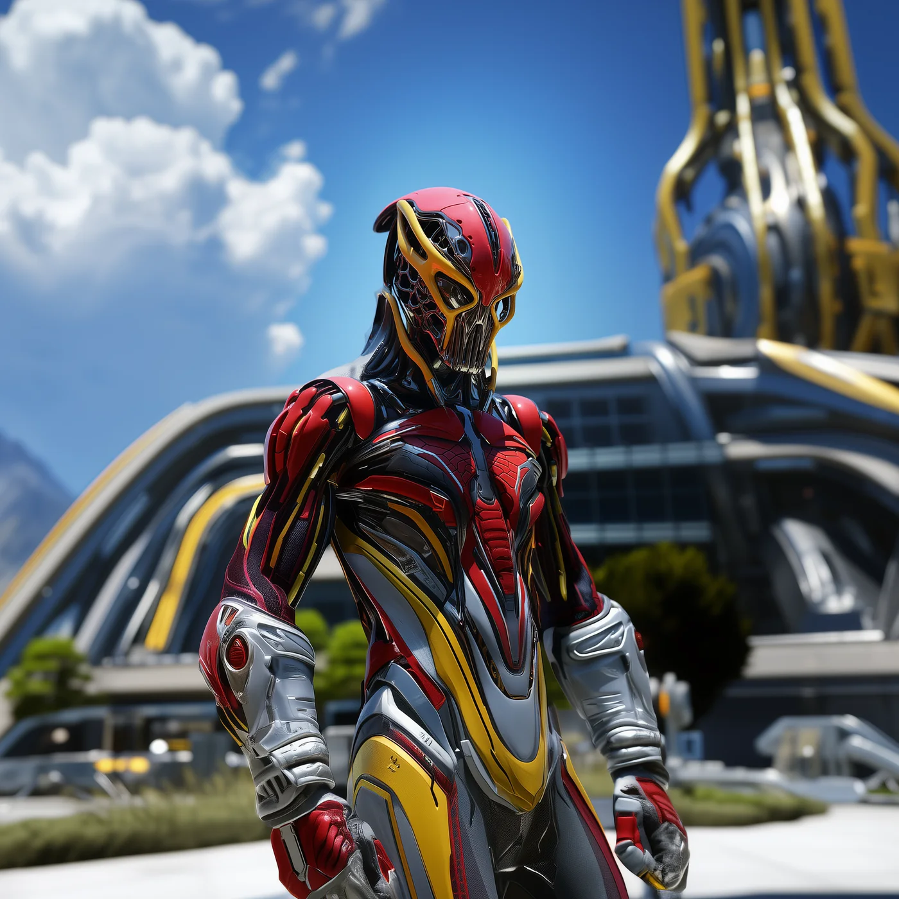
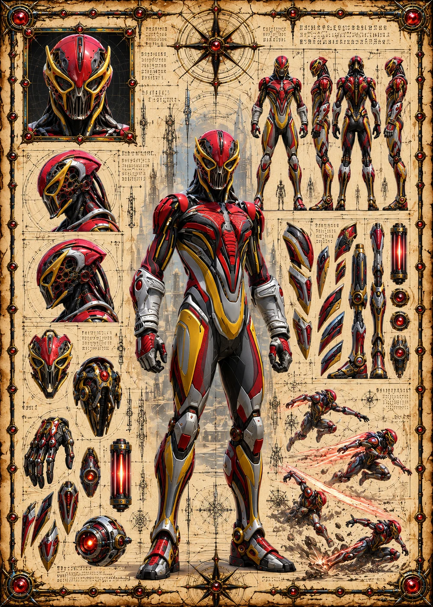

©
©
GENEZYS ARCHIVE · Earth 2 · Synthbot
Lorna
Atrophy Visionary

Archive record
Lorna's gaze is the first thing a Grim Corsair raid brings through the portal, and the last thing many enemies see. The Wither Glance withers the flanks and drains whoever stands in the middle. Like every Corsair, Lorna's pilot has sworn to bring a trophy back from Earth 1.
Combat signature
Wither Glance
210 Cosmara
130 Animus
170 Vitalis
Peers with gaze that crumbles flesh: Deals 30 pierce damage to enemies on the edges. The enemy in the middle loses 60 Cosmara.
Genezys 06:01 ™&©2026LEGIONS
